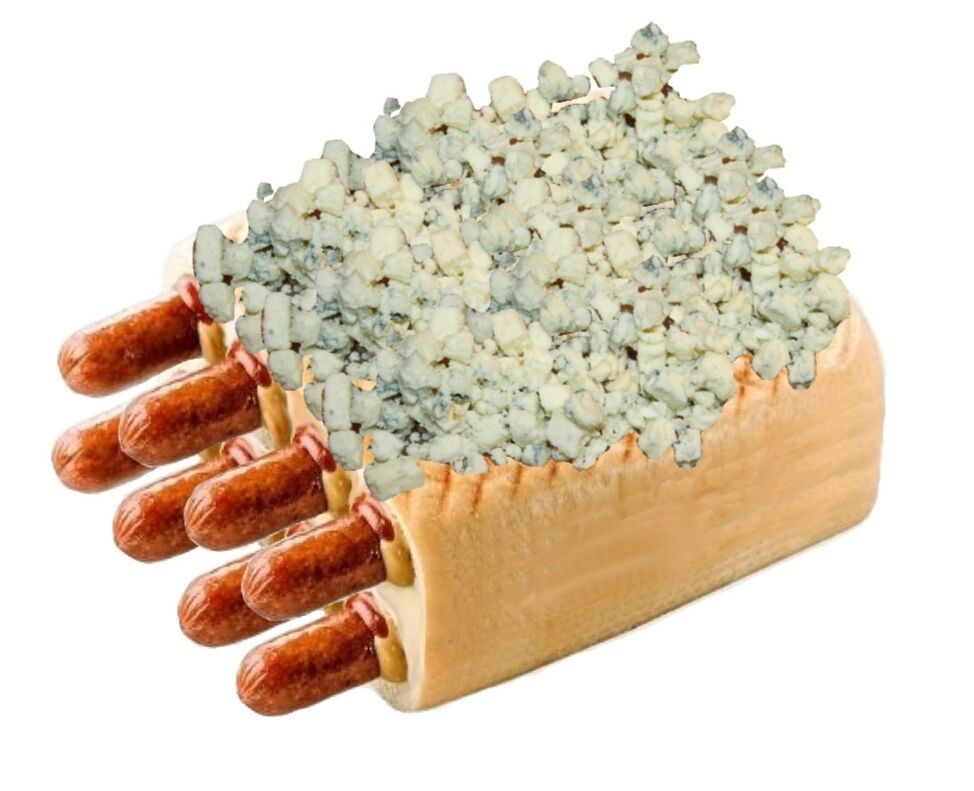

Nakkipatteri aurajuustolla

Resepti:
Uunissa paistettu nakkipatteri aurajuustolla
- 1 pkt nakkeja
- 1 kpl ranskanleipää
- 5 rkl ketsuppia
- 5 rkl sinappia/li>
- 100g aurajuustoa
- Kaiverra ranskanleipään nakeille tilaa
- Täytä ketsupilla ja sinapilla
- Aseta nakit reikiin
- Laita uuniin kypsymään 200C grillivastuksella 8min
- Ota patteri uunista, lisää aurajuusto ja aseta patteri takaisin uuniin jälkilämmöllä 15min